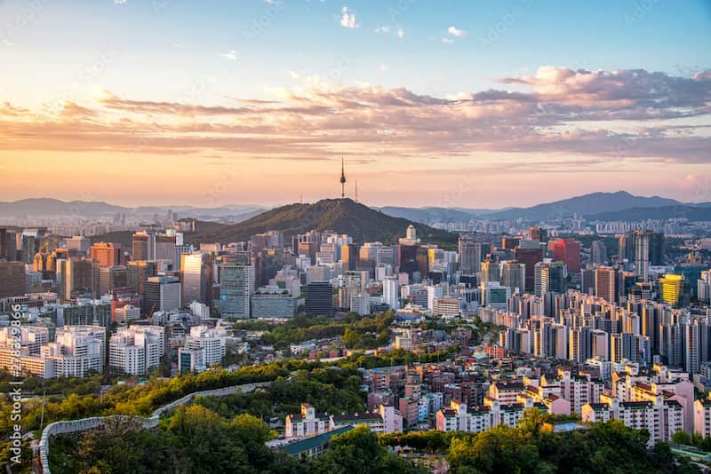

Interesting Tidbits The "Head" City: Unlike most Korean place names, "Seoul" is a native Korean word meaning "capital" and has no original Chinese character (Hanja) equivalent; in 2005, a phono-semantic Chinese name, Shǒu'ěr (meaning "head city"), was officially adopted. Smart and Tall: It is home to the Lotte World Tower, the 6th tallest building in the world, which features an "ultra-fast" elevator and the world's highest glass-bottomed observation deck. Coffee & Karaoke Culture: Seoul has one of the highest concentrations of coffee shops globally (approx. 70,000) and roughly one karaoke bar (noraebang) for every 350 residents. Unique Restrooms: At the N Seoul Tower, the public restrooms feature floor-to-ceiling glass walls, allowing visitors a panoramic view of the city from the summit of Namsan Mountain. Modernizing History: In 2026, the city is completing a major project to install 12 scenic observatories, including sunset viewpoints and skywalks, to enhance the skyline experience for tourists and locals alike.
